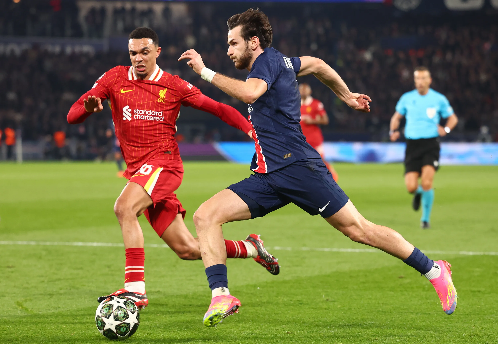

Mening tanlagan mavzum: Sevimli sportim.
Men futbolni juda yaxshi ko‘raman. Maydonda yugurish menga katta zavq beradi. Mashg‘ulotlar davomida esa o‘zimni yanada kuchli his qilaman.
Bu rasm futbol maydonini tasvirlaydi.
Bu esa futbol o‘ynayotgan futbolchining rasmi. U sportning qiziqarli jihatlarini ko‘rsatadi.
Quyidagi havola orqali mening sevimli futbol videosini ko‘rishingiz mumkin:
Sevimli video